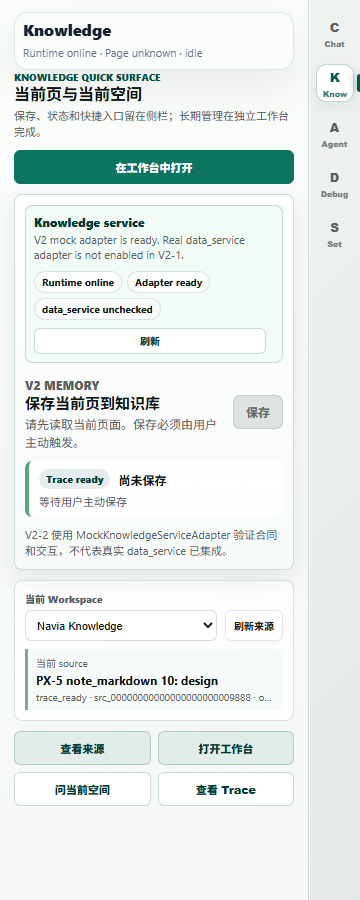

PX-5 验收已重新打开
2026-09-09：FAIL / REOPENED。PX-6 因 5 组 Major 阻塞。上轮“机器验收通过、仅待人工签署”结论撤回。
本轮复核了生成器、校验器和现有原始记录，未重新运行 Chrome。原始文件保留供追溯，不能据此宣布当前产品验收全绿。
- 39 份执行观察中38份使用整个 E2E 报告哈希作为 Runtime 响应指纹；14次可信手势没有对应原始可信事件记录。
- 生成后的 Source Detail ID 与入口消息 ID 不一致；普通标签页打开侧栏页面没有证明宿主网页的实际侧栏保存路径。
- Permission、Forget 四面结果和部分 UX 指标被写成固定成功值。
- 生产校验器未执行完整冻结语义，另写了较弱的架构扫描。
- 生产报告复制合同夹具成功结果，原独立审计零问题结论不足以成立。
原始记录包含77项断言且未记录失败。这是现有 runner 的记录，不能替代缺失的证据与规则执行。

旧截图仅作问题复核：不能证明当前网页已通过用户主动保存。
完整证据复核与代码位置 · 当前机器可读处置状态 · 限定修复与验收计划
下一步：确认限定修复处置后，完成采集、生成、校验与负向测试闭环，重新执行真实路径验收。机器 Major 关闭后才进入人工产品签署。